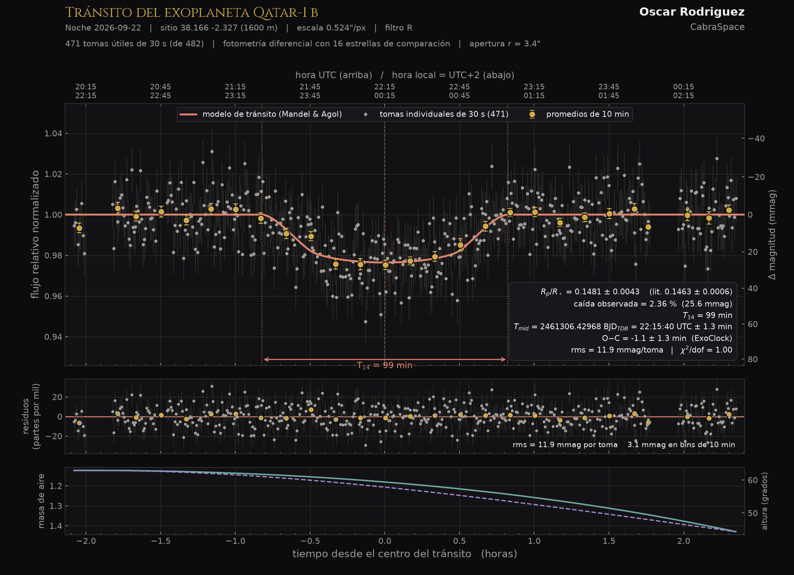
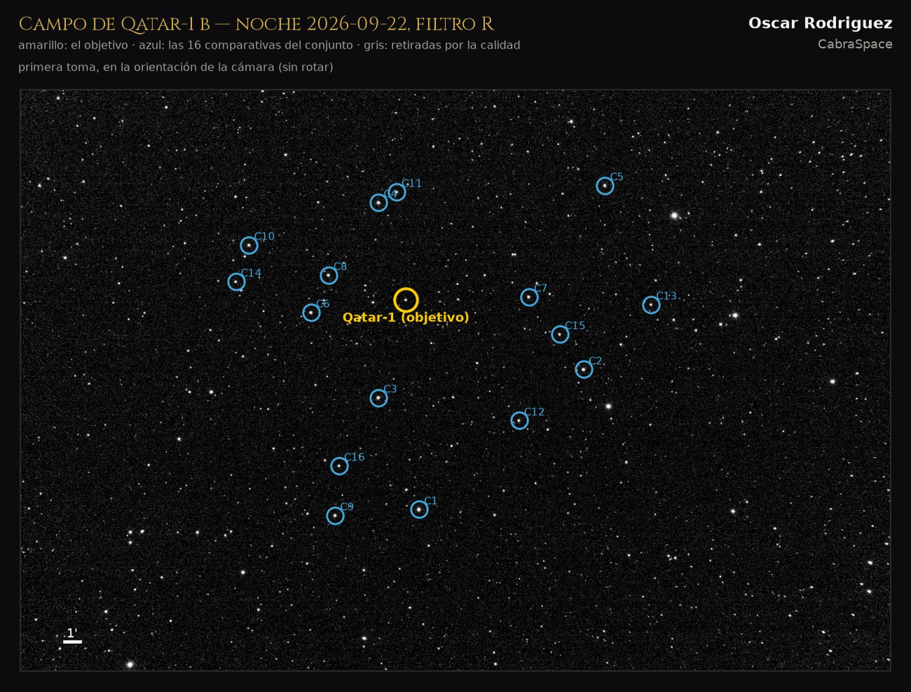
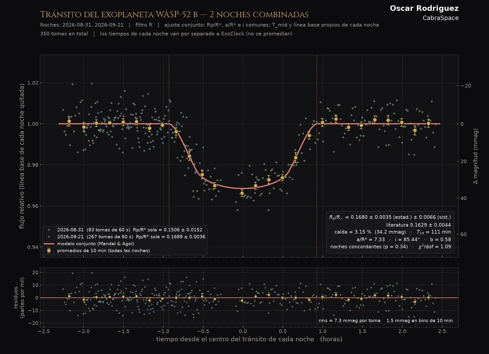
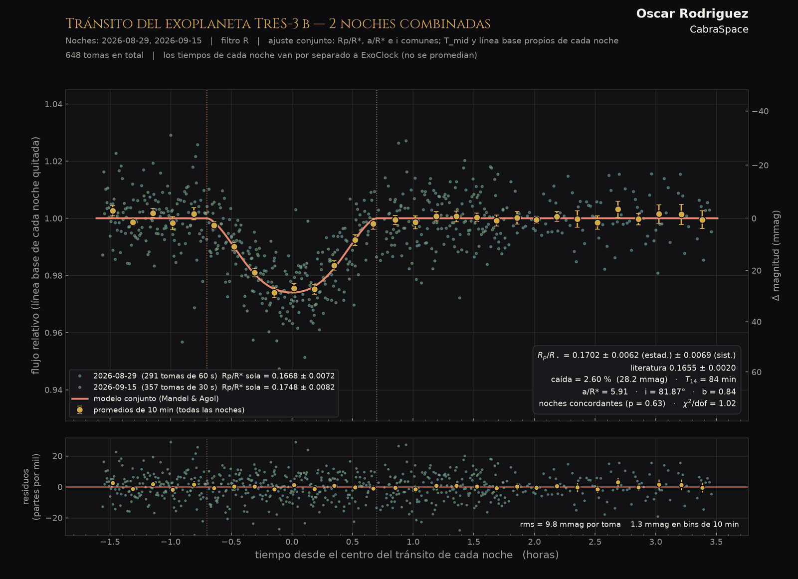
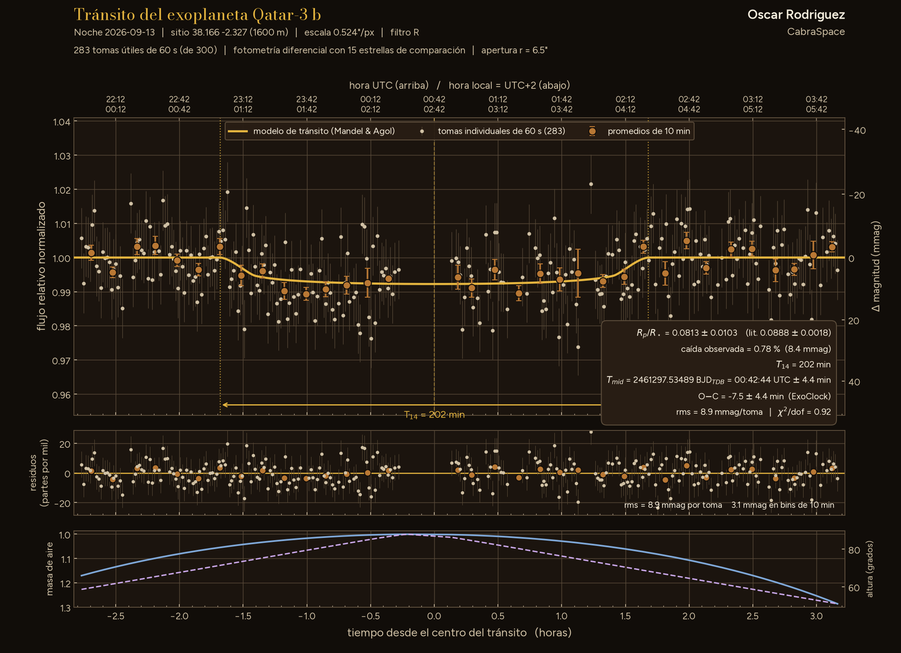

CabraSpace
Observations
Software
Logbook
Web tools
ES
·
EN
I.
Web tools
Use them now · nothing to install
II.
Observations
Photography · Measurements
III.
Logbook
News
IV.
Software
Desktop software
ES
·
EN
Observations
›
Exoplanets
Pl. X
Light curve · one night
Transit of
Qatar-1 b

Fig. 1
Relative flux against time, with the fitted model.
Fig. 2
The whole night on video.

Fig. 3
The field: target and comparison stars.
More in
exoplanets
All

Pl. IX
Exoplanets · 21 Sep
Transit of WASP-52 b
partial

Pl. VIII
Exoplanets · 15 Sep
Transit of TrES-3 b

Pl. VII
Exoplanets · 13 Sep
Transit of Qatar-3 b
partial